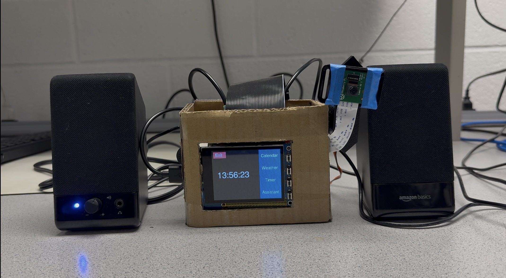
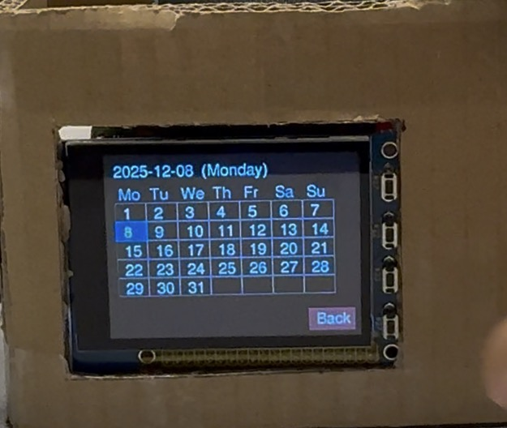
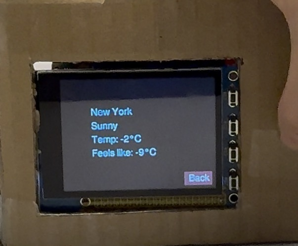
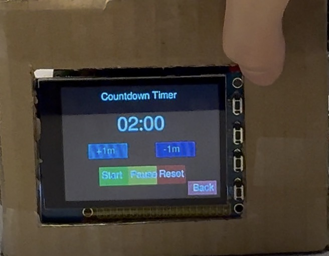
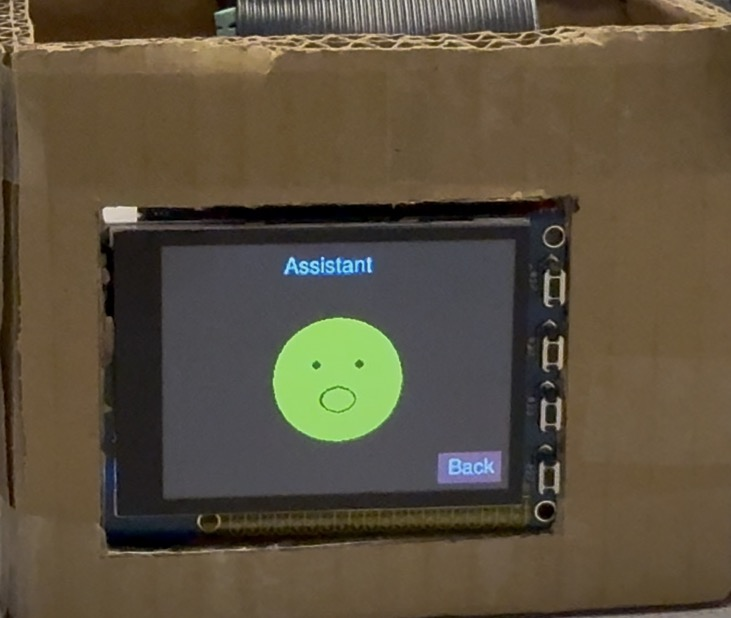

Introduction
In this project, we designed and implemented a Raspberry Pi–based Desktop Assistant as an embedded system that integrates multiple interaction modalities, including touch, voice, and visual feedback.
The system is built around a Raspberry Pi with a PiTFT touchscreen, physical GPIO buttons, a microphone, a speaker, and a camera module. These components enable standalone operation and allow users to interact with the device through touchscreen input, button presses, and voice commands.
Objective

- Touch UI: a right-side menu with four applications (Calendar, Weather, Timer, Assistant).
- Voice assistant: wake-word detection, speech-to-text, response generation, and text-to-speech.
- Face tracking: detect the user’s face and rotate the camera platform horizontally to re-center.
- Usability: a hardware “Back” button that works consistently across all screens.
Design and Testing
Hardware Design
The hardware system is built around a Raspberry Pi with a PiTFT touchscreen and integrates physical buttons, audio I/O, and a camera module to support touch, voice, and vision-based interaction. A USB microphone captures user speech, and a speaker plays text-to-speech (TTS) responses. A camera is mounted on a single-axis pan mechanism driven by a servo motor to enable horizontal face tracking.
- Inputs: PiTFT touch, GPIO buttons, microphone, camera.
- Outputs: PiTFT display, speaker, servo motor.
- Power: stable 5V supply to avoid brownouts during audio playback and servo movement.
Software Design
UI (PyGame on PiTFT)
- Main menu: four application buttons (Calendar, Weather, Timer, Assistant).
- Each module uses a lightweight render loop and avoids long blocking work in the UI path.
- A single GPIO handler provides consistent “Back” behavior across all screens.
Assistant pipeline
- Wake-word detection triggers the interaction loop.
- Speech-to-text produces a query that is sent to the language model for response generation.
- The response is played back using text-to-speech, while the UI reflects assistant states.
Face tracking loop
The face tracking module runs as a simple control loop: detect a face in each frame, compute the horizontal offset relative to the image center, and update the servo target angle to reduce the offset while respecting motion limits.
- Input: camera frames. Output: servo target angle (pan axis only).
- Face position is smoothed to reduce detection noise and avoid rapid oscillation.
- A dead-zone threshold is used so small offsets do not trigger unnecessary motion.
System Test
We tested each module independently (UI navigation, calendar/weather/timer behavior, assistant Q&A, and face tracking), then validated end-to-end operation by running the full system continuously and performing repeated interactions across touch, button, voice, and vision modes.
Key Roadblocks
Audio sample rate mismatch
During early integration of speech recognition and text-to-speech, we encountered ALSA and PortAudio errors caused by mismatched audio sample rates (e.g., 44.1 kHz versus 16 kHz). This prevented reliable audio capture and playback.
We resolved this issue by explicitly configuring a consistent sample rate across the microphone input, Vosk recognizer, and TTS output, ensuring stable end-to-end audio operation.
Performance and UI freezing
Network requests and blocking operations initially caused the PiTFT interface to freeze or become unresponsive, especially when fetching weather data or waiting for assistant responses.
This was mitigated by separating time-consuming tasks from the UI render loop and caching data where possible, allowing the interface to remain responsive during normal use.
Servo power and torque limits
The SG90 servo motor used for face tracking has limited torque and was sensitive to sudden position changes, which sometimes resulted in unstable motion.
To address this, we constrained the servo motion range in software and applied smoothing and dead-zone thresholds to reduce unnecessary movement and mechanical stress.
False wake-ups
Wake-word detection occasionally triggered unintentionally due to background noise or similar-sounding words, affecting the user experience.
We improved reliability by refining state transitions, filtering partial recognition results, and restricting wake-word detection to specific assistant states.
Results and Conclusion
The final system successfully integrates a responsive PiTFT touch interface and a voice-based assistant into a single standalone desktop device. All four core applications—Calendar, Weather, Timer, and Assistant—operated reliably during extended testing and live demonstrations.
Users were able to navigate between applications using the touchscreen and physical buttons, view real-time information, run countdown timers, and interact with the assistant through voice commands with audible responses. These results demonstrate that the system meets the original project objectives and provides a functional multi-modal desktop assistant.

Figure 1. Calendar interface displaying the current month.

Figure 2. Weather interface showing current conditions.

Figure 3. Timer application during countdown operation.

Figure 4. Voice assistant interface during user interaction.
Parts List
| Item | Qty | Unit Cost | Subtotal |
|---|---|---|---|
| Raspberry Pi | 1 | $60(lab) | $60(lab) |
| PiTFT Touchscreen | 1 | $44.95(lab) | $44.95(lab) |
| Raspberry Pi Camera | 1 | $29.95(lab) | $29.95(lab) |
| Microphone + Speaker | 1 | $15.95 | $15.95 |
| Servo Motor | 1 | $5.95(lab) | $5.95(lab) |
Work Distribution

- Assistant state machine design
- System UI design
- Timer module implementation
- Hardware assembly and device integration

- Speech recognition model deployment
- Calendar module implementation
- Weather module implementation
- Face-tracking model deployment
Code Appendix
The complete source code for this project, including the UI implementation, assistant pipeline, and face-tracking modules, is available on GitHub: